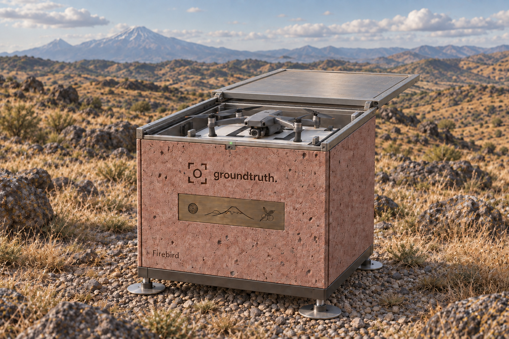

Wildfire
Burned vegetation across a protected landscape.
AUA Acopian Center · Landsat 8 / USGS · false colour
LAND MONITORING · ARMENIA FIRST
Satellite signals. Detailed drone surveys. A clear record of what changes, and where.
See the use casesWHAT WE LOOK FOR
Real reference images. A starting point for targeted surveys.
Burned vegetation across a protected landscape.
AUA Acopian Center · Landsat 8 / USGS · false colour
A new route cuts across the fields.
GroundTruth team conceptFree Sentinel-2 imagery with limited detail. Drone surveys are the next step.
Sentinel-2 / Copernicus · Aragats archive
Water reaches roads and riverside structures.
UNOSAT · Pléiades / CNES / Airbus
New roof footprints beside existing buildings.
GroundTruth team conceptFree Sentinel-2 imagery with limited detail. Drone surveys are the next step.
Sentinel-2 / Copernicus · Aragats archive
Excavation replaces parts of a wooded landscape.
NASA Earth Observatory · Landsat / USGS
Archive examples, not GroundTruth detections. Open an image to see the original comparison and source notes.
Detect a change, send a drone to the right place, and return with detailed evidence. For a landscape such as Khosrov, a station deployed nearby could support permitted post-fire surveys and repeat visits to observe recovery.
26–27 SEPTEMBER · YEREVAN
Three planned outputs.
One complete cycle on a real site.
Label changes in Armenian satellite scenes. Train and test a detector.
Map the survey area. Visit a permitted site near Yerevan with our drone and operator.
Compare the evidence, document what changed and close the case.
WHO IT IS FOR
Observe agricultural land, vegetation, slope changes, snow cover and water extent. Combine broad satellite views with local measurements and targeted surveys.
Follow construction, roads and infrastructure with repeat surveys. Give owners, developers and investors a dated visual record of progress on the same site.
Provide departments with mapped changes, source imagery and field evidence. Support land management and environmental monitoring, including post-fire and flood assessment.
Monitoring subscriptions · Targeted surveys · Datasets & reports
REPEAT SURVEYS · RELOCATABLE FIELD BOX
Bring the station to a site. Collect regular drone surveys. Move it when monitoring is complete.

Bring it where monitoring is needed. Run repeat surveys, then move it on. No permanent construction.
Monitoring technology meets traditional Armenian stone carving. A field station and a small work of public art.
Design concept. Deployment and flights depend on site conditions and permissions. Decorative branding does not imply partnership.
THE PEOPLE BEHIND IT
Entrepreneurs across countries and industries. Ready to invest our own resources and keep building beyond the hackathon.
Product & operations
150+ B2B partners
across 15 countries
Pearch.ai · People Tech & Data Science product. Background in civil construction, engineering systems and AR/XR.
Product, regional partnerships and field coordination.
Cartography & geodesy
ODS AI
hackathon winner
Information Systems engineer, Moscow State University of Geodesy and Cartography.
Geospatial analysis, survey planning and AI automation.
Technical development
Founding Engineer
at Pearch.ai
Previously CTO of a US handyman marketplace. Python, Node.js, C/C++, APIs and MCP.
Model training and satellite-to-drone integration.